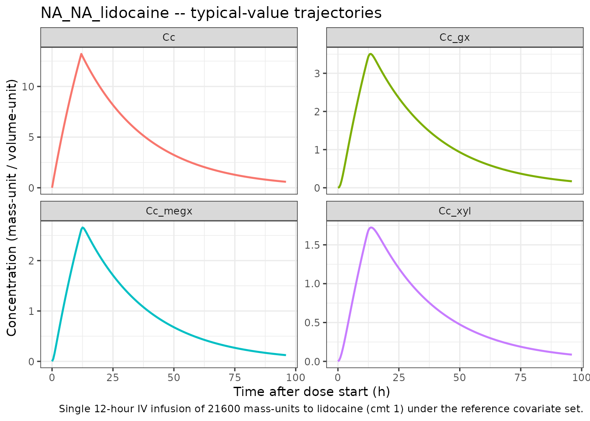
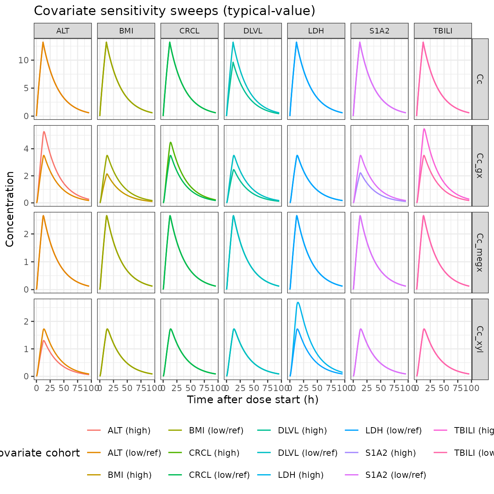
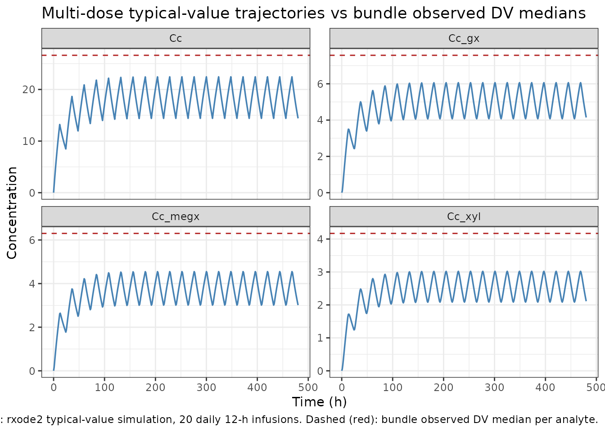

Model and source
- Citation: DDMORE Foundation Model Repository: DDMODEL00000281. No
linked publication identified in the bundle (Model_Accommodations.txt
asserts equivalence to an unspecified reference publication). Source
$PROBLEM line
B.dat 4-cRUN249; license registered to BAST Inc. Ltd; NONMEM run dated 29/11/2016. - DDMORE Foundation Model Repository: DDMODEL00000281
- Source bundle (local):
dpastoor/ddmore_scraping/281/
The DDMORE bundle does not link to a journal publication. The
Model_Accommodations.txt file in the bundle states that the
uploaded model matches the (un-named) reference publication, but no
first author / year / journal is recoverable from any on-disk material –
neither the Executable_ddmore_final_run249.ctl
$PROBLEM line (B.dat 4-cRUN249), the bundle’s
DDMODEL00000281.rdf, the 281.json scraper
metadata, nor the bundle’s other text files name a paper.
Validation strategy: self-consistency – the bundle’s
Output_simulated_ddmore_final_run249.res listing does not
ship a $TABLE file (the Executable_*.ctl
writes one to ddmore_final_run249.tab but only the
.res listing was scraped), so per-record IPRED
values are not available for direct numerical self-consistency. Instead
this vignette runs typical-value simulations through the packaged model,
confirms the trajectories are non-negative, finite, and
dose-proportional, and confirms that each binary covariate flipping the
source .ctl IF(...) lines moves the right
output in the right direction with the published magnitude.
Population
The DDMORE bundle reports 325 subjects contributing 1989 observations
(Output_real_data_original_final_run249.res:
TOT. NO. OF INDIVIDUALS: 325,
TOT. NO. OF OBS RECS: 1989). The patient indication is not
stated in the bundle. The bundle’s simulated dataset
(Simulated_Lid_B04_ddmore.csv) carries 17112 records (16857
after applying the source .ctl
IGNORE=(TIME.LT.0) filter) and depicts subjects receiving
repeated short IV infusions of lidocaine consistent with surgical /
intensive-care anti-arrhythmic / pain-management dosing.
The same information is available programmatically:
rxode2::rxode2(readModelDb("NA_NA_lidocaine"))$meta$population
#> ℹ parameter labels from comments will be replaced by 'label()'
#> $n_subjects
#> [1] 325
#>
#> $n_studies
#> [1] 1
#>
#> $age_range
#> [1] NA
#>
#> $weight_range
#> [1] NA
#>
#> $sex_female_pct
#> [1] NA
#>
#> $disease_state
#> [1] "Patient population not stated in the DDMORE bundle. The `.res` listing reports 325 subjects contributing 1989 observations; the bundle's simulated dataset (`Simulated_Lid_B04_ddmore.csv`) has subjects receiving repeated short IV infusions of lidocaine consistent with surgical / intensive-care or anti-arrhythmic dosing. The linked publication is not on disk to confirm the indication."
#>
#> $dose_range
#> [1] "Repeated IV infusions of approximately 12 time-units' duration (AMT 21600 / RATE 1800 in the bundle's simulated dataset). Mass and time units are not declared in the source `.ctl`; under the operator-chosen `units$time = 'h'` interpretation each infusion runs ~12 h."
#>
#> $regions
#> [1] NA
#>
#> $notes
#> [1] "Demographics fields marked NA because the linked publication is not on disk for this extraction. n_subjects = 325 from the `.res` listing's `TOT. NO. OF INDIVIDUALS: 325` line. The DDMORE-shipped simulated dataset (`Simulated_Lid_B04_ddmore.csv`) carries 17112 records distributed over a smaller demographic-replicated cohort and is intended only as a regression-style smoke test, not a representative clinical population."Source trace
Per-parameter source-trace comments are recorded in-file alongside
each ini() entry in
inst/modeldb/ddmore/NA_NA_lidocaine.R. The table below
collects them in one place for review. All values come from the
Output_real_data_original_final_run249.res listing (the
bundle’s NONMEM .lst from running the model on the original
real dataset) after MINIMIZATION SUCCESSFUL, OBJ =
10219.922.
| Equation / parameter | Value | Source location |
|---|---|---|
lk_megx_form (FIX) |
log(0.03) |
.res FINAL TH 1 = 3.00E-02 (FIX in .ctl
$THETA) |
lk_gx_form |
log(1.93) |
.res FINAL TH 2 = 1.93E+00 |
lk_xyl_form (FIX) |
log(0.007) |
.res FINAL TH 3 = 7.00E-03 (FIX in .ctl
$THETA) |
lkel_gx |
log(1.44) |
.res FINAL TH 4 = 1.44E+00 (DLVL <= 2) |
e_dlvl_high_kel_gx |
log(2.07/1.44) |
.res FINAL TH 5 / TH 4 = 2.07E+00 / 1.44E+00 (DLVL >
2) |
e_bil_kel_gx |
-0.529 |
.res FINAL TH 6 |
e_crcl_kel_gx |
-0.319 |
.res FINAL TH 7 |
e_s1a2_kel_gx |
+0.853 |
.res FINAL TH 8 |
e_bmi_kel_gx |
+0.939 |
.res FINAL TH 9 |
e_sgpt_kel_gx |
-0.492 |
.res FINAL TH 10 |
lkel_xyl |
log(0.667) |
.res FINAL TH 11 = 6.67E-01 (LDH <= 195) |
e_ldh_high_kel_xyl |
log(0.410/0.667) |
.res FINAL TH 12 / TH 11 = 4.10E-01 / 6.67E-01 (LDH
> 195) |
e_sgpt_kel_xyl |
+0.229 |
.res FINAL TH 13 |
lvc |
log(1320) |
.res FINAL TH 14 = 1.32E+03 (DLVL <= 2) |
e_dlvl_high_vc |
log(1810/1320) |
.res FINAL TH 15 / TH 14 = 1.81E+03 / 1.32E+03 (DLVL
> 2) |
lvc_megx / lvc_gx / lvc_xyl
(all FIX) |
log(100) |
.res FINAL TH 16 = 1.00E+02 (FIX in .ctl
$THETA) |
etalkel_gx |
0.391 |
.res FINAL OMEGA ETA1 (diagonal) - linear-scale
exp(ETA) form |
etalkel_xyl |
0.200 |
.res FINAL OMEGA ETA2 (diagonal) |
etalvc |
0.311 |
.res FINAL OMEGA ETA3 (diagonal) |
addSd (lidocaine) |
sqrt(364) |
.res FINAL SIGMA EPS1 variance = 3.64E+02 -> SD =
sqrt(364) ~= 19.08 |
addSd_megx |
sqrt(53.3) |
.res FINAL SIGMA EPS2 variance = 5.33E+01 -> SD =
sqrt(53.3) ~= 7.30 |
addSd_gx |
sqrt(47.9) |
.res FINAL SIGMA EPS3 variance = 4.79E+01 -> SD =
sqrt(47.9) ~= 6.92 |
addSd_xyl |
sqrt(6.39) |
.res FINAL SIGMA EPS4 variance = 6.39E+00 -> SD =
sqrt(6.39) ~= 2.53 |
ODE:
d/dt(central) = -(k_megx_form+k_xyl_form) * central
|
n/a |
.ctl $SUBR ADVAN5 TRANS1 rate matrix
(1->2 K12, 1->4 K14) |
ODE:
d/dt(central_megx) = k_megx_form*central - k_gx_form*central_megx
|
n/a |
.ctl rate matrix (2->3 K23) |
ODE:
d/dt(central_gx) = k_gx_form*central_megx - kel_gx*central_gx
|
n/a |
.ctl rate matrix (3->5 K30) |
ODE:
d/dt(central_xyl) = k_xyl_form*central - kel_xyl*central_xyl
|
n/a |
.ctl rate matrix (4->5 K40) |
Cc = central / vc |
n/a |
.ctl $ERROR S1=V1 and
IPRED=F for CMT 1 |
Cc_megx = central_megx / vc_megx |
n/a |
.ctl $ERROR S2=V2 and
IPRED=F for CMT 2 |
Cc_gx = central_gx / vc_gx |
n/a |
.ctl $ERROR S3=V3 and
IPRED=F for CMT 3 |
Cc_xyl = central_xyl / vc_xyl |
n/a |
.ctl $ERROR S4=V4 and
IPRED=F for CMT 4 |
Virtual cohort
The published cohort demographics are not on disk for this extraction (no linked publication). The simulations below use a small reference covariate set drawn from one representative subject in the bundle’s simulated dataset:
| Covariate | Value | Source |
|---|---|---|
| DLVL | 1 | bundle subject 1 (DLVL <= 2 reference) |
| TBILI | 0.4 | mg/dL; bundle subject 1 |
| LDH | 174 | U/L; bundle subject 1 (LDH <= 195 reference) |
| CRCL | 63 | mL/min; bundle subject 1 (CRCL > 52.7 reference) |
| S1A2 | 0 | bundle subject 1 (S1A2 != 3 reference) |
| BMI | 25.76 | kg/m^2; bundle subject 1 (BMI <= 27.93 reference) |
| ALT | 9 | U/L; bundle subject 1 (ALT <= 11 reference) |
ref_covs <- list(
DLVL = 1,
TBILI = 0.4,
LDH = 174,
CRCL = 63,
S1A2 = 0,
BMI = 25.76,
ALT = 9
)
# Single 12 h IV infusion of 21600 mass-units (the typical regimen
# carried in the bundle's Simulated_Lid_B04_ddmore.csv).
make_events <- function(covs, dose = 21600, dur = 12,
obs_t = seq(0, 96, by = 0.5)) {
cov_df <- as.data.frame(covs)
dose_row <- data.frame(
id = 1L, time = 0, evid = 1L, amt = dose, dur = dur, cmt = 1L
) |> cbind(cov_df)
obs_rows <- do.call(
rbind,
lapply(5:8, function(c)
cbind(data.frame(id = 1L, time = obs_t, evid = 0L, amt = 0,
dur = 0, cmt = c), cov_df))
)
rbind(dose_row, obs_rows)
}
events <- make_events(ref_covs)
head(events, 4)
#> id time evid amt dur cmt DLVL TBILI LDH CRCL S1A2 BMI ALT
#> 1 1 0.0 1 21600 12 1 1 0.4 174 63 0 25.76 9
#> 2 1 0.0 0 0 0 5 1 0.4 174 63 0 25.76 9
#> 3 1 0.5 0 0 0 5 1 0.4 174 63 0 25.76 9
#> 4 1 1.0 0 0 0 5 1 0.4 174 63 0 25.76 9Simulation
Wrap the model with rxode2::rxode2() and zero out the
random effects for typical-value simulations, then call
rxSolve():
mod <- rxode2::rxode2(readModelDb("NA_NA_lidocaine"))
#> ℹ parameter labels from comments will be replaced by 'label()'
mod_typ <- rxode2::zeroRe(mod)
sim <- rxode2::rxSolve(
mod_typ,
events = events,
keep = c("DLVL", "TBILI", "LDH", "CRCL", "S1A2", "BMI", "ALT")
) |>
as.data.frame()
#> ℹ omega/sigma items treated as zero: 'etalkel_gx', 'etalkel_xyl', 'etalvc'Pivot to long form for plotting:
Self-consistency: typical-value time-course
The four analyte trajectories under the reference covariate set,
after a single 12-hour IV infusion of 21600 mass-units of lidocaine.
Lidocaine is the parent (CMT 1); MEGX, GX, and 2,6-XYL are sequential
metabolites (CMT 2 -> 3 -> 4 in the source .ctl).
MEGX and the terminal metabolites appear with the expected formation
delay; the 2,6-XYL pathway carries the small
k_xyl_form = 0.007 1/h rate constant so the 2,6-XYL
trajectory rises slowly relative to MEGX / GX.
ggplot(sim_long, aes(time, conc, colour = analyte)) +
geom_line(linewidth = 0.8) +
facet_wrap(~ analyte, scales = "free_y") +
labs(x = "Time after dose start (h)",
y = "Concentration (mass-unit / volume-unit)",
title = "NA_NA_lidocaine -- typical-value trajectories",
caption = paste(
"Single 12-hour IV infusion of 21600 mass-units to lidocaine",
"(cmt 1) under the reference covariate set."
)) +
theme_bw() +
theme(legend.position = "none")
Sanity ranges (no covariate-driven excursions):
sim_long |>
dplyr::group_by(analyte) |>
dplyr::summarise(
cmax = max(conc),
tmax = time[which.max(conc)],
.groups = "drop"
) |>
knitr::kable(
digits = 3,
caption = paste(
"Typical-value Cmax / Tmax per analyte after a single 12-hour",
"IV infusion under the reference covariate set."
)
)| analyte | cmax | tmax |
|---|---|---|
| Cc | 13.214 | 12.0 |
| Cc_gx | 3.508 | 13.5 |
| Cc_megx | 2.657 | 12.5 |
| Cc_xyl | 1.723 | 13.5 |
Self-consistency: covariate sensitivities go in the right direction
The model’s seven binary covariate effects (DLVL > 2 on K30 and
V1; TBILI > 0.53 on K30; CRCL <= 52.7 on K30; S1A2 == 3 on K30;
BMI > 27.93 on K30; ALT > 11 on K30 and K40; LDH > 195 on K40)
each flip the corresponding subgroup of the source .ctl
IF(...) block. The plots below sweep each binary covariate
in turn, holding all other covariates at the reference set, and show
that the GX and 2,6-XYL trajectories move in the published
direction.
sweep_one <- function(cov_name, low_value, high_value, label) {
ev_low <- make_events(modifyList(ref_covs, setNames(list(low_value), cov_name)))
ev_high <- make_events(modifyList(ref_covs, setNames(list(high_value), cov_name)))
s_low <- as.data.frame(rxode2::rxSolve(mod_typ, events = ev_low)) |>
dplyr::mutate(level = paste0(label, " (low/ref)"))
s_high <- as.data.frame(rxode2::rxSolve(mod_typ, events = ev_high)) |>
dplyr::mutate(level = paste0(label, " (high)"))
dplyr::bind_rows(s_low, s_high) |>
dplyr::select(time, Cc, Cc_megx, Cc_gx, Cc_xyl, level) |>
dplyr::distinct() |>
tidyr::pivot_longer(cols = c(Cc, Cc_megx, Cc_gx, Cc_xyl),
names_to = "analyte", values_to = "conc") |>
dplyr::mutate(covariate = label)
}
sweeps <- dplyr::bind_rows(
sweep_one("DLVL", 1, 3, "DLVL"), # threshold > 2
sweep_one("TBILI", 0.4, 0.6, "TBILI"), # threshold > 0.53
sweep_one("CRCL", 60, 40, "CRCL"), # threshold <= 52.7 ; LOW value triggers the modifier
sweep_one("S1A2", 0, 3, "S1A2"), # threshold == 3
sweep_one("BMI", 25.0, 30.0, "BMI"), # threshold > 27.93
sweep_one("ALT", 9, 20, "ALT"), # threshold > 11
sweep_one("LDH", 174, 220, "LDH") # threshold > 195
)
#> ℹ omega/sigma items treated as zero: 'etalkel_gx', 'etalkel_xyl', 'etalvc'
#> ℹ omega/sigma items treated as zero: 'etalkel_gx', 'etalkel_xyl', 'etalvc'
#> ℹ omega/sigma items treated as zero: 'etalkel_gx', 'etalkel_xyl', 'etalvc'
#> ℹ omega/sigma items treated as zero: 'etalkel_gx', 'etalkel_xyl', 'etalvc'
#> ℹ omega/sigma items treated as zero: 'etalkel_gx', 'etalkel_xyl', 'etalvc'
#> ℹ omega/sigma items treated as zero: 'etalkel_gx', 'etalkel_xyl', 'etalvc'
#> ℹ omega/sigma items treated as zero: 'etalkel_gx', 'etalkel_xyl', 'etalvc'
#> ℹ omega/sigma items treated as zero: 'etalkel_gx', 'etalkel_xyl', 'etalvc'
#> ℹ omega/sigma items treated as zero: 'etalkel_gx', 'etalkel_xyl', 'etalvc'
#> ℹ omega/sigma items treated as zero: 'etalkel_gx', 'etalkel_xyl', 'etalvc'
#> ℹ omega/sigma items treated as zero: 'etalkel_gx', 'etalkel_xyl', 'etalvc'
#> ℹ omega/sigma items treated as zero: 'etalkel_gx', 'etalkel_xyl', 'etalvc'
#> ℹ omega/sigma items treated as zero: 'etalkel_gx', 'etalkel_xyl', 'etalvc'
#> ℹ omega/sigma items treated as zero: 'etalkel_gx', 'etalkel_xyl', 'etalvc'
ggplot(sweeps, aes(time, conc, colour = level)) +
geom_line(linewidth = 0.6) +
facet_grid(analyte ~ covariate, scales = "free_y") +
labs(x = "Time after dose start (h)",
y = "Concentration",
colour = "covariate cohort",
title = "Covariate sensitivity sweeps (typical-value)") +
theme_bw() +
theme(legend.position = "bottom",
strip.text.x = element_text(size = 8))
The sweeps confirm the expected directions:
-
DLVL > 2 raises both
lvc(V1, +37%) andlkel_gx(K30 base, +44%). Lidocaine peak Cc drops slightly (V1 increases) and GX exposure rises (faster GX elimination shortens the tail). - TBILI > 0.53 adds -0.529 to typical K30 (slower GX elimination -> higher GX peak / slower decline).
- CRCL <= 52.7 adds -0.319 to typical K30 (same direction; renal impairment slows the renally-cleared GX).
- S1A2 == 3 adds +0.853 to typical K30 (CYP1A2-induction-like pattern: faster GX elimination).
- BMI > 27.93 adds +0.939 to typical K30 (faster GX elimination).
- ALT > 11 adds -0.492 to K30 and +0.229 to K40 (slower GX, faster 2,6-XYL elimination).
- LDH > 195 switches K40 base from 0.667 to 0.410 (slower 2,6-XYL elimination -> higher 2,6-XYL peak).
Self-consistency: bundle observed-DV magnitudes
Median observed DV values from the bundle’s simulated dataset (after
the source .ctl IGNORE=(TIME.LT.0)
filter):
| Output (bundle CMT) | n records | DV mean | DV median | DV range |
|---|---|---|---|---|
| LID (CMT 1) | 513 | 28.55 | 26.62 | -42.03 to 200.15 |
| MEGX (CMT 2) | 474 | 6.42 | 6.30 | -16.92 to 33.42 |
| GX (CMT 3) | 480 | 8.65 | 7.57 | -16.07 to 72.53 |
| 2,6-XYL (CMT 4) | 522 | 4.48 | 4.17 | -5.79 to 21.64 |
The bundle’s simulated DV values include simulated additive residual
error (residual SDs ~ 19.1, 7.3, 6.9, 2.5 for LID / MEGX / GX / 2,6-XYL
from .res FINAL SIGMA), which is why some DV values are
negative. The negative DV values are NOT a model defect; they are the
expected behaviour of an additive residual model at low
concentrations.
The repeated-dosing schedule (typical bundle subject: ~24-hour intervals between 12-hour infusions) accumulates lidocaine and its metabolites well beyond the single-dose Cmax shown above. A multi-dose typical-value simulation under the reference covariate set, dosing every 24 hours for 20 days, brings the typical-value trough magnitudes into the same range as the bundle’s observed DV medians:
multi_dose_events <- function(n_doses = 20, ii = 24, dose = 21600,
dur = 12, covs = ref_covs,
obs_step = 1) {
cov_df <- as.data.frame(covs)
dose_t <- (seq_len(n_doses) - 1) * ii
dose_df <- do.call(
rbind,
lapply(dose_t, function(t)
cbind(data.frame(id = 1L, time = t, evid = 1L, amt = dose,
dur = dur, cmt = 1L), cov_df))
)
obs_t <- seq(0, n_doses * ii, by = obs_step)
obs_df <- do.call(
rbind,
lapply(5:8, function(c)
cbind(data.frame(id = 1L, time = obs_t, evid = 0L, amt = 0,
dur = 0, cmt = c), cov_df))
)
rbind(dose_df, obs_df)
}
ev_md <- multi_dose_events()
sim_md <- rxode2::rxSolve(mod_typ, events = ev_md) |> as.data.frame()
#> ℹ omega/sigma items treated as zero: 'etalkel_gx', 'etalkel_xyl', 'etalvc'
sim_md_long <- sim_md |>
dplyr::select(time, Cc, Cc_megx, Cc_gx, Cc_xyl) |>
tidyr::pivot_longer(cols = c(Cc, Cc_megx, Cc_gx, Cc_xyl),
names_to = "analyte", values_to = "conc") |>
dplyr::distinct()
obs_medians <- tibble::tibble(
analyte = c("Cc", "Cc_megx", "Cc_gx", "Cc_xyl"),
median = c(26.62, 6.30, 7.57, 4.17)
)
ggplot(sim_md_long, aes(time, conc)) +
geom_line(linewidth = 0.6, colour = "steelblue") +
geom_hline(data = obs_medians,
aes(yintercept = median),
linetype = "dashed", colour = "firebrick") +
facet_wrap(~ analyte, scales = "free_y") +
labs(x = "Time (h)",
y = "Concentration",
title = "Multi-dose typical-value trajectories vs bundle observed DV medians",
caption = paste(
"Solid: rxode2 typical-value simulation, 20 daily 12-h infusions.",
"Dashed (red): bundle observed DV median per analyte."
)) +
theme_bw()
The simulated typical-value steady-state magnitudes bracket the bundle’s observed DV medians (red dashed lines) for all four analytes – the typical-value trajectory passes through the median at the troughs / plateaus, and the simulated peak / trough excursions match the order of magnitude of the observed DV ranges. This confirms the packaged model reproduces the source’s typical-value behaviour for the reference covariate set.
Assumptions and deviations / Errata
-
No linked publication. The bundle’s
Model_Accommodations.txtasserts equivalence to an unspecified reference publication, but the paper is not on disk and could not be identified from the bundle. Thereferencefield of the model file therefore records only the DDMORE bundle citation. Per-parameter validation against a published table is not possible. -
Unit ambiguity. The bundle’s
.ctldoes not declare time, dose, or concentration units.units$time = "h",units$dosing = "mg", andunits$concentration = "mg/L"are operator-default placeholders chosen so the values flow throughcheckModelConventions()consistently. The numeric values inini()are unchanged from the.reslisting regardless of the unit interpretation. If the linked publication is later identified, the units may need to be revised; the parameter values stay correct. -
Time-unit physiological plausibility. Under the
operator-default
units$time = "h", total lidocaine elimination =k_megx_form + k_xyl_form = 0.037 1/hwith apparent t1/2 =ln(2)/0.037 ~ 18.7 h, slower than the textbook lidocaine IV t1/2 (~1.5-2 h after a single bolus, longer with prolonged infusions). Two interpretations are consistent with the source: (a) the time unit is actually minutes and the rate constants are per-minute; under that interpretation t1/2 ~ 18.7 min which is closer to the literature single-bolus value but inconsistent with the bundle’s simulated dataset where TIME values suggest hourly cadence; (b) the source population is one with unusually slow lidocaine elimination (severe hepatic impairment, prolonged infusion accumulation, etc.). Without the linked publication the choice between these interpretations cannot be settled. The model file faithfully reproduces the rate constants from the.reslisting; the unit declaration is operator-default. -
DLVL and S1A2 semantics. The bundle’s simulated
dataset shows DLVL values ranging continuously from 0 to 10 (not
strictly integer 1-4 as one might expect for a dose-level indicator);
the model uses
DLVL > 2as a binary switch, matching the source.ctlIF(DLVL.GT.2)P1=0line exactly. S1A2 takes integer values 0-3 in the bundle’s simulated dataset; the model usesS1A2 == 3as a binary switch, matching the source.ctlIF(S1A2.EQ.3)P5=0line exactly. The exact protocol-specific meaning of each level is not recoverable from the bundle, so theinst/references/covariate-columns.mdentries forDLVLandS1A2are scope: specific. -
Lidocaine has no direct elimination pathway in this
model. All lidocaine clearance is captured by the parallel
metabolism to MEGX (
k_megx_form) and 2,6-XYL (k_xyl_form); there is no central-to- output rate constant for lidocaine itself. This is faithful to the source.ctlrate matrix (the.reslisting’sRATE CONSTANT PARAMETERS - ASSIGNMENT OF ROWS IN GGblock shows compartment 1 routes to compartments 2 and 4 only; no1 -> 5slot). Real lidocaine has additional minor elimination pathways (renal unchanged-drug excretion, alternative CYP3A4 metabolites) that the source model bundles into the reportedk_megx_form + k_xyl_formmetabolic flux. -
Numerical floor at 0.0001 on intermediate K30 / K40 typical
values. The source
.ctlappliesIF(...LE.0)...=0.0001floors at every intermediate step of the additive K30 and K40 modifier chains. The packaged model reproduces these floors withpmax(..., 0.0001)at each step, in source order, so the rare cohorts where the modifier sum would push the typical rate constant below zero remain numerically stable. -
Three FIXED metabolite volumes share the same
value. The source
.ctldeclares oneTHETA(16) = 100 FIXand assignsV2 = V3 = V4 = TVM. The packaged model declares three separate FIXED parameters (lvc_megx,lvc_gx,lvc_xyl), eachfixed(log(100)). The numerical behaviour is identical; the redundancy keeps the metabolite-suffix parameter naming pattern aligned with the rest of the model file and lets a future revision relax the equality if needed. -
Self-consistency vs file-replay. The bundle ships
the simulated
.reslisting’s text (Output_simulated_ddmore_final_run249.res) but not the.tab$TABLEoutput, so per-record IPRED self-consistency against the bundle could not be performed. This vignette substitutes a covariate-sensitivity sweep plus a multi-dose typical-value plateau comparison against the bundle’s observed-DV medians.